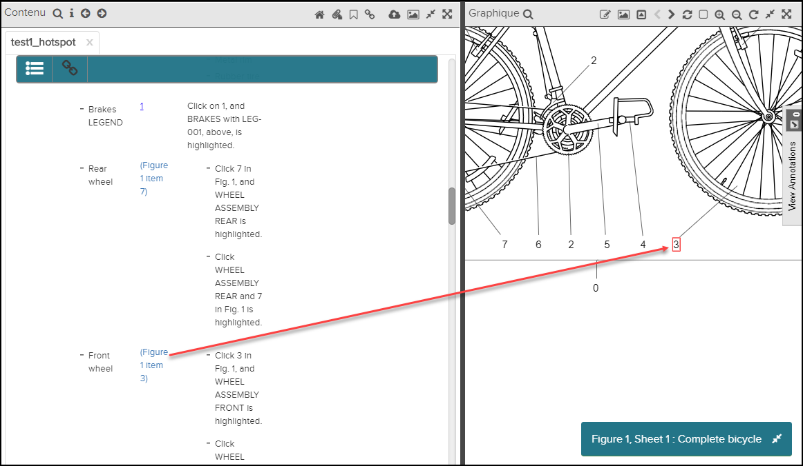
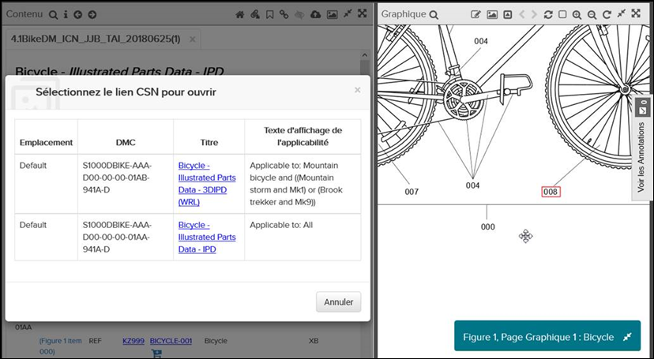

Les hotspots SVG sont pris en charge pour les données créées avec les builders
S1000D et les style kits suivants:
- stylekit-s1000d-4.0-ata
- stylekit-s1000d-4.0.1
- stylekit-s1000d-4.1
Les types de hotspot suivants sont pris en charge:
- Texte-à-graphique (internalRef)
- Graphique-à-texte (internalRef)
- Graphique-à-document (dmRef) (seule S1000D)
- Hotspots multi-destination (dmRef) (seule S1000D)
Lorsque vous utilisez des liens de point d’accès, vous pouvez utiliser le bouton
Précédent de la
barre d’action pour revenir au menu principal. document / graphique que
vous avez visionné. Le graphique associé est ouvert en mettant en évidence le graphique
sélectionné et avec le point chaud mis en évidence.
Texte-à-graphique (internalRef)
La référence texte-à-graphique est un lien dans la fenêtre Contenu qui dirigera
l'utilisateur vers graphique dans le même document. Lorsque vous cliquez sur ce lien, la
fenêtre Graphique ouvre et effectue un zoom avant sur l'objet lié.
L'objet dans le graphique est également souligné.
Dans l'exemple ci-dessous, le lien "Figure" de la sous-fenêtre Contenu renvoie à l'objet du
graphique:

Lien texte vers graphique
Graphique-à-texte (internalRef)
Un objet dans un graphique peut relier à un élément dans le même document. En cliquant sur
ce lien, la fenêtre Contenu affiche à l'objet lié.
Graphique à documenter et hotspots multi-destinations (dmRef)
Un objet
dans le graphique peut créer un lien vers un ou plusieurs documents différents.
- Si l'objet n'est lié qu'à un seul module de données, vous serez redirigé directement
vers ce document.
- Si l'objet est lié à plusieurs documents, vous obtiendrez une liste de références
lorsque vous cliquerez sur cet objet, comme indiqué dans l'exemple ci-dessous:

Graphique à documenter et hotspots multi-destinations (dmRef)
En cliquant sur une référence le document sera ouvert dans la fenêtre
Contenu.
Si vous souhaitez revenir au document précédent, vous
pouvez cliquer sur le bouton
Précédent dans la
barre
d’actions.